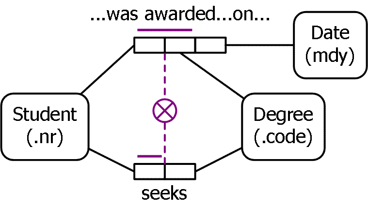

Object Role Modeling (ORM) is a
powerful method for designing and querying database models at the
conceptual level, where the application is described in terms easily
understood by non-technical users. In practice, ORM data models often
capture more business rules, and are easier to validate and evolve than
data models in other approaches.
This site features a number of technical papers and articles on ORM, as
well as other approaches such as the Unified Modeling Language (UML).
Permission has been obtained from the relevant publishers to reproduce
these publications on this website, and to make them freely downloadable.
If you are unfamiliar with ORM, you may want to first review the ORM in Detail section of this
site. Details about upcoming courses and conferences, as well as links to
websites with additional ORM publications may be found in the Resources section.
The editor
Dr. Terry Halpin,
Distinguished Professor and Vice President of Conceptual Modeling at Neumont University, Utah, formalized
the Object Role Modeling notation and has authored five books and over 100
technical papers. Visit the rest of this site to explore various
conceptual data modeling topics discussed in his publications.
Information on this site will grow with time, so please revisit.
If you have any feedback or suggestions, please e-mail me at thalpin@comcast.net.
Happy reading!
Terry Last updated: 2006 July 30 NORMA (Neumont ORM Architect) is a new modeling tool under
development that supports the next generation of ORM (ORM 2). Implemented
as an open-source plug-in to Microsoft's Visual Studio.NET 2005, NORMA
requires at least the standard version of Visual Studio 2005. For further
details on the ORM 2 graphical notation, see ORM 2 Technical Report
1. A technical preview
of NORMA is available on SourceForge. The software is currently in the
pre-beta stage, but extensive functionality enhancements and
user-interface improvements are planned for the near future. Currently the
tool supports entry of ORM2 schemas, verbalization of of most constraints,
and code generation (for basic constraints) to a variety of DBMSs
(including SQL Server, DB2, Oracle, and PostgreSQL) as well as class
models and XML schema. NORMA is capable of importing ORM schemas entered
in Visio for Enterpise Architects, but the diagrams need to be laid out
manually. For Part 1 of the specification for automated verbalization in NORMA, see ORM 2 Technical Report 2.
An international workshop on ORM will be held in Montpellier, France on
November 2-3, 2006, in conjunction with the On The Move federated
conferences. For further details, see the ORM2006 Workshop Call For
Papers.
Added paper on Business Rule Modality (Modeling Issues page).
Added link to second NORMA Technical report (this page).
Added links to ORM 2 drawing stencil for Visio and a bitmap copy of my
1989 PhD thesis (Resources page).
Added Parts 12 and 13 of Business Rules Journal series on verbalizing
business rules (Resources page).
Updated conference details and book errata (Resources page).
Added paper on Objectification (Modeling Issues page) -- minor updates
made.
Added article on information modeling and higher-order types (Modeling
Issues page).
Added article discussing uniqueness constraints on objectifed
associations (Modeling Issues page).
A webcast on ORM's fact-based modeling approach to database design is
available (Resources page).
The 25th
episode of the .NET Show focused on ORM, including an interview with
Terry Halpin, Pat Hallock and Dick Barden, and demonstrations of the ORM
and database modeling features of Microsoft Visio for Enterprise
Architects.
See above for details on NORMA.
Microsoft's 2005 release of Visio for Enterprise Architects
(VEA) includes some minor upgrades of the ORM and logical database
modeling solutions (e.g. a driver for SQL Server 2005 is now included).
Visio for Enterprise Architects appears to be included in MSDN Premium
subscriptions. The least expensive way to get an MSDN Premium subscription
appears to be through a purchase of "Visual Studio 2005 Professional
Edition with MSDN Premium Subscription." Click here for MSDN
subscription information and purchase
details.
Scot Becker of Orthogonal Software has released Orthogonal
Toolbox, a free add-on to Visio for Enterprise Architects that exposes
most of the model details stored in an ORM source model or a logical
database model as an XML layer. The original version 1.0 provides the
following features:
The version 1.5 upgrade adds the following enhancements and features:
Scot also has an informative blog site ObjectRoleModeling.com that
includes lots of useful tips and news about ORM and related database
modeling topics.
The former ORM tool known as VisioModeler is freely available as
an unsupported product from Microsoft Corporation (as a 25 MB download).
Models developed in VisioModeler may be exported to Microsoft's current
and future ORM solutions, which are based on the Visio drawing engine. To
obtain the free VisioModeler download titled "VisioModeler (Unsupported
Product Edition)", click on this download
page, and click on the file MSVM31.exe to download it. The 25 MB file
takes just over 2 hours to download on a 28.8 k modem.
A new freeware ORM tool (Infagon) is available -- see Resources
page.
Books: The following book provides a detailed, authoritative coverage of how
to use Microsoft's high end Visio tool to design databases: Halpin, T.,
Evans, K., Hallock, P. & MacLean B. 2003, Database Modeling with
Microsoft Visio for Enterprise Architects, Morgan Kaufmann Publishers:
San Francisco, ISBN 1-55860-919-9. The book may be ordered online from
various booksellers, including this
Amazon website and this
Barnes & Noble website.
Update log:


Thanks for dropping in to the
Object Role Modeling web site. In addition to the technical papers
on Object Role Modeling and other modeling approaches, you can find
details about my book, Information Modeling and Relational
Databases, information about other resources, and interviews
with the press.


To view a PDF file you need to
install an additional piece of software called Adobe
Acrobat Reader from the Adobe site.
The following book is available: Halpin, T.A. 2001,
Information Modeling and Relational Databases, published by Morgan Kaufmann Publishers (ISBN
1-55860-672-6). Details on this book may be found at the book's
website, which includes a link to a Companion Website that includes
additional appendices, answers to odd numbered questions etc. for
download. The book can be ordered online at the publisher's website
(above) or at various other sites, for example at Barnes&Noble
or at Amazon.
2006 July 30: Added paper on Business Rule Modality (Modeling Issues page), and link to second NORMA Technical report (this page).
2006 June 18: Updated format for several pages.
2006 April 30: Updated errata file for Information Modeling book (Resources page).
2006 April 8: Added
links to ORM 2 drawing stencil for Visio and a bitmap copy of my 1989 PhD
thesis (Resources page).
2006 March 21: Added details on NORMA,
various conferences, and software upgrades (Home page), and Parts 12 and
13 of Business Rules Journal series on verbalizing business rules
(Resources page).
2005 Sep 4: Added paper on Objectification (Modeling
Issues page). Updated conference details and University name.
2005 Jun
26: Added Parts 10 and 11 of Business Rules Journal series on verbalizing
business rules (Resources page).
2005 Mar 23: Added details about ORM
2005 workshop in Cyprus (Home page and Resources page).
2005 Jan 28:
Updated errata file for Information Modeling and Relational
Databases; updated EMMSAD2005 Call for Papers (Resources page).
2004 Dec 28: Added Part 9 of Business Rules Journal series on
verbalizing business rules (Resources page).
2004 Dec 27: Added
details on Infagon freeware ORM tool. Added link to webcast on fact-based
database design. Updated errata files for Information Modeling and
Relational Databases, and Database Modeling with Microsoft Visio
for Enterprise Architects. Updated conference details. (Resources
page)
2004 Sep 19: Added details on version 1.5 of Orthogonal Toolbox
(this page).
2004 Sep 11: Added paper on information modeling and
higher-order types (Modeling Issues page). Edited links to ORM episode of
.NET Show to go directly to that episode.
2004 Sep 04: Added three
Business Rules Journal articles (Resources page); Updated Conference
details (Resources page); Updated errata files for two books (Resources
page).
2004 Mar 27: Added article discussing uniqueness constraints on
objectifed associations (Modeling Issues page); Updated book errata for
Information Modeling and Relational Databases (Resources page).
2004 Mar 20: Updated book errata for Information Modeling and
Relational Databases (Resources page).
2004 Mar 01: Added pdf
versions for verbalizing business rules articles (parts 1 - 5). Updated
errata files for Information Modeling and RDB book, and Visio DB Modeling
book. Updated conference details.
2003 Nov 25: Updated errata files
for books 'Information Modeling and Relational Databases' and 'Database
Modeling with Microsoft Visio for Enterprise Architects' (Resources page).
2003 Nov 22: Updated book errata file for 'Database Modeling with
Microsoft Visio for Enterprise Architects' (Resources page).
2003 Nov
01: Added book errata link for 'Database Modeling with Microsoft Visio for
Enterprise Architects'; added link to Part 4 of Verbalizing Business Rules
series; added link to Scot Becker's blog site; added link to CaseTalk tool
(Resources page).
2003 Aug 31: Updated Book Errata (Resources page).
2003 Aug 13: Added details about new database modeling book (Home page
and Resources page); added links to Business Rules Journal articles by
Terry Halpin (Resource page).
2003 Aug 10: Updated Book Errata
(Resources page).
2003 Jul 25: Updated Book Errata (Resources page).
2003 Jul 20: Updated Book Errata (Resources page).
2003 Jul 10:
Updated Book Errata (Resources page).
2003 Jul 3: Updated conference
details and Book Errata (Resources page).
2003 Jun 11: Updated
Northface University links (this page).
2003 May 25: Updated Book
Errata (Resources page).
2003 Apr 26: Updated Book Errata (Resources
page).
2003 Mar 2: Updated book errata (Resources page).
2003 Mar
1: Updated book errata (Resources page).
2003 Feb 8: Added details on,
and link to, the Business Rules Community (Resources page).
2003 Jan
23: Fixed link to Journal of Conceptual Modeling (Resources page).
2003 Jan 10: Added new conference details and Part 8 of series on
using VEA (Resources page)
2002 Dec 13: Updated details on the free
Visio viewer (this page and Resources page)
2002 Dec 12: Updated book
errata (Resources page).
2002 Nov 21: Updated book errata (Resources
page).
2002 Nov 17: Added links to North Face Learning (this page
etc.)
2002 Nov 1: Updated book errata (Resources page).
2002 Oct
11: Updated book errata (Resources page).
2002 Sep 26: Updated
affiliation details for Terry Halpin (this page etc.).
2002 Sep 6:
Updated link to Dr. ter Hofstede's website (Resources page).
2002 Sep
1: Updated p. 130 of Join Constraints paper (Modeling Issues page);
Updated Book Errata (Resources page).
2002 Aug 14, 15, 17: Updated
book errata (Resources page).
2002 Aug 3: Added Part 7 of series on
using Visio for Enterprise Architects (VEA), details of Microsoft's
offical Course 2090 on using ORM and VEA to model databases, and fixed the
link to Prof. Meersman's STARlab website (Resources page).
2002 Jul
25: Updated book errata (Resources page).
2002 Jul 2: Added new paper
on Join Constraints (Modeling Issues page). Updated Book Errata (Resources
page).
2002 Jun 17: Updated Book Errata (Resources page).
2002 Jun
13: Added link to the ORM .NET Show (Home page and Resources page).
2002 Jun 9: Added link to Orthogonal Toolbox and Scot Becker's site
(Resources page); added Part 6 of series on using VEA (Resources page);
updated Book errata (Resources page).
2002 May 19: Added slides for
IRMA-2002 panel session (ORM and UML page); updated book errata (Resources
page).
2002 May 7: Minor updates on conference details.
2002 Apr
23: Updated EMMSAD workshop details with Call for Participation (including
list of accepted papers). Updated Barnes&Noble link for book. Updated
links to MSDN articles.
2002 Apr 6: Resources Page: Added links to
Visio for Enterprise Architects Service Release 1, Visio 2002 SDK and the
Visio Viewer technical preview. Added Part 5 of series on using VEA, and
links to various ORM-related papers at Microsoft. ORM in Detail page:
Added links to ORM overviews at Microsoft.
2002 Mar 9: Updated
EMMSAD2002 call for papers, and added link to Prof. Meersman's home page
(Resources page).
2002 Mar 2: Added draft version of knowledge base
articles for VEA (above, and on Resorces page); updated book errata
(Resources page); fixed typo in Figure 9 of ORM overview paper (ORM in
Detail page).
2002 Feb 17: Added MSDN link to Visual Studio .NET
pricing details (above); updated book errata (Resources page)
2002 Feb
10: Added notice regarding Microsoft Tech Ed 2002, and Part 4 of series on
Microsoft's new database modeling tool (see resources page).
2002 Feb
2: Updated Resources page with revisions to Book Errata, and added notice
regarding my tutorial on fact-oriented modeling for the CAiSE conference
to be held May 2002.
2002 Jan 20: Updated product details on Home and
Resources pages; updated the Resources page with Book Errata, and several
additions/updates to Conference details.
2001 Nov 30: Updated
Resources page with Part 3 of Using VSEA series, and added relevant MSDN
links.
2001 Oct 13: Updated the white paper "Object Role Modeling: An
Overview" to make it consistent with the version of ORM supported in Visio
for Enterprise Architects (see ORM In Detail section). Updated the
Resources section with information about new ORM courses.
2001 Sep 16:
Updated Resources section with more details on Microsoft's new ORM tool,
articles on how to use this tool, an overview paper of my new book, John
Miller's Wikis, and the PDC 2001 conference.
2001 Mar 31: Updated
Resources section to include details on ORM tools, tutorial on
VisioModeler, and new book information.
2001 Feb 17: Updated ISBN and
weblink for new book (Resources section)
2001 Feb 13: Added the paper
"Augmenting UML with Fact-orientation" (see UML and ORM section)
ORM Home ORM in Detail Modeling Issues
Conceptual Queries UML and ORM Resources
All diagrams on this site were created with Microsoft Visio.